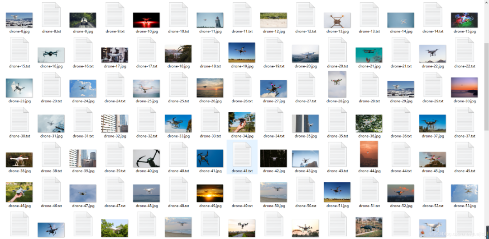
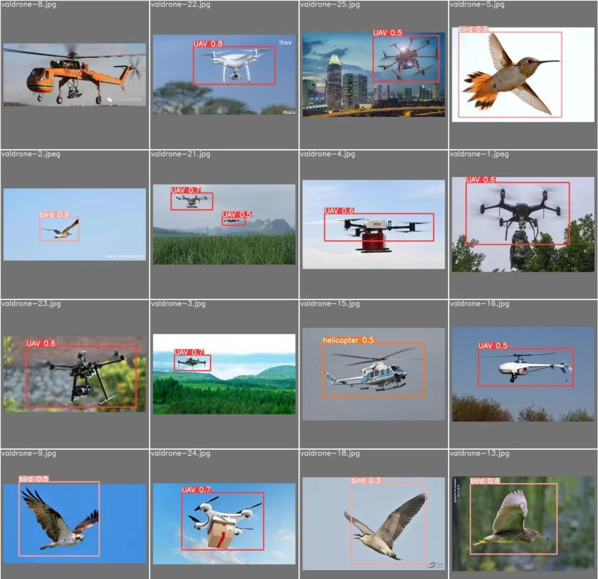
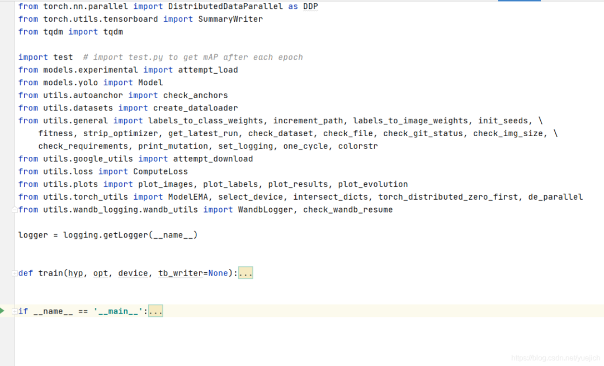
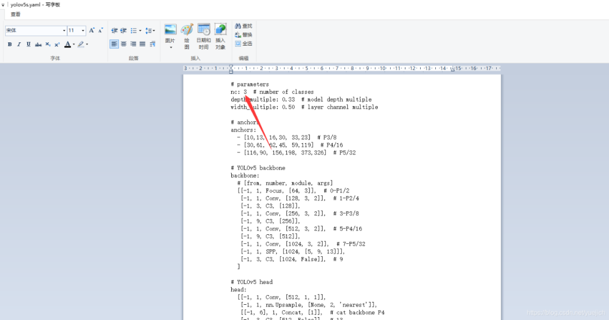
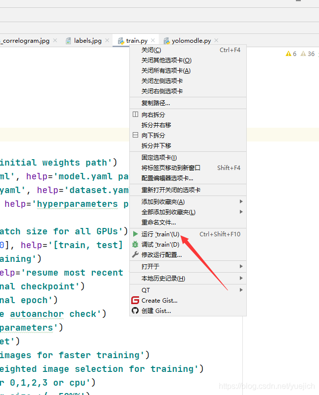
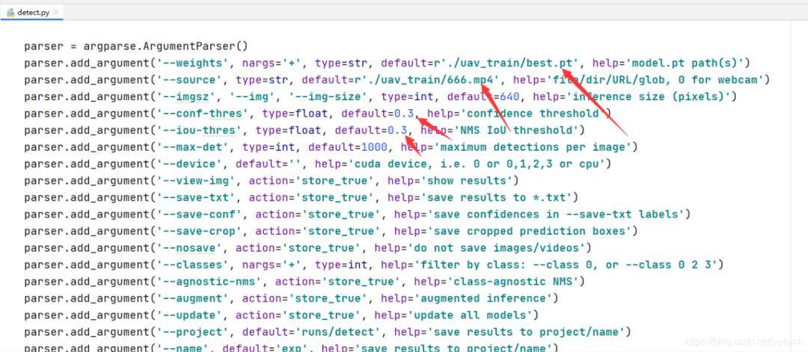
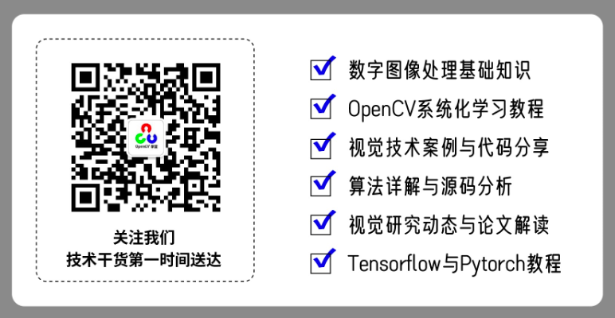

微信公众号：OpenCV学堂
关注获取更多计算机视觉与深度学习知识
编辑: gloomyfish
作者: 陈金光
引言
YOLOv5发布至今，已经迭代多个版本，是唯一基于pytorch框架的YOLO系列的模型框。简单易用，特别适合自定义目标检测与对象检测。只要用了Pytorch版本YOLOv5框架，可以毫不夸张的说两个小时就可以学会目标检测。
01
第一步数据准备
想用视觉识别一下空中飞行的无人机，识别对象有：
1：鸟类bird2：无人机UAV3：直升机helicopter
想通过自己创建一个数据集，训练yolov5，在调用detect.py来识别一下效果。
百度了一下，发现无法获取别人已经标注好的数据集。（这里提醒大家，自己做数据集不费时间，给100多张图打标签label就行，用不了半个小时）图片就从百度搜索就行，我们的目的是感性的认识这套牛掰的算法，100张图训练个几个小时就可以出来很好的效果，还有不用非要显卡，虽然我的电脑有显卡，但是装pytorch的显卡cuda版本的总是出错，索性不弄了，直接用cpu版本，cpu版本的pytorch包还小，一会儿就能安装好，这100张图我训练了100个epoch花费了3到4个小时，我的电脑的cpu是i7-9700的）
我是从百度上找了大概130多张图片，我截个图：

用labelimage打上标签，所有的标签数量大概也就200来个吧！不会用labelimgage制作数据集的同学可以看这里：
https://github.com/tzutalin/labelImgyolo的数据文件夹格式又要巩固一下了，先建一个数据文件夹data，在数据文件夹data目录下面建图像文件夹images和标签文件夹labels，然后在images文件夹下面建立训练数据集train和验证集val（validation的缩写，验证校验的意思），在labels的文件夹下面也是建立train和val两个文件夹，分别放训练集和验证集的标签。
另外说一下验证集，验证集里面我找了26张图片，标记了40个左右的labels吧，所以所有的数据加起来大概150张图片。
我放一个图片看一下验证集里面的图片如下图：

到这里为止，所有的数据基本整理完毕，另外还需要几张测试的图片，到测试的时候再从网上找就是了。
02
配置与修改参数
这里下载yolov5的源码就不写怎么下载了，自己百度就好，相对难度低，我是从gitee上下载的，github总是卡，这个源码也没有多大，几分钟的时间就下载好了。下面直接写怎么改一下代码训练自己制作好的无人机的数据集。
分步骤写吧
首先：明确思路
怎么训练这个算法？我要训练什么模型？我要拿这个模型做什么？这些问题是在训练这个算法的时候首先要想的问题。
回答：
我要训练一个模型能够识别空中飞行的无人机，并打上红框label，空中的复杂环境下可能不只有无人机，会有鸟、树、白云、直升机、飞机等等其他干扰因素印象，简单起见，我又加上了鸟bird和直升机helicopter，所以用yolov5分类nc（number class）为3个，也就是无人机UAV、鸟bird、直升机、helicopter，看下图，建立一个数据信息文件，文件格式yaml
我把这个文件名保存成了chenchen.yaml
训练集图片train在uav_train下面的data里面，训练集也是，这个文件不用写标签label的地址，因为文件夹结构是定的，程序会自动判断出label的位置。
chenchen.yaml文件里面的nc改成2，names改成自己的，也就是uav bird 和helicopter
下面我贴两张图片，这两张图片是我训练了100张图后，测试的标签和测试的预测，基本上框的位置已经很好了，只有左上角的这个直升机helicopter没有被识别出来，这个我感觉是因为我找的直升机图片的问题，这个直升机图片有点特别，训练数据中这样的图片少的原因。

总结：思路明确了，就是做一个三分类模型，无人机、鸟、直升机，
其次修改train.py文件
思路确定了后就是训练这个模型了，我们已经把数据集准备好了，现在就训练这个模型。下载下来的yolo源码里面的train.py文件，我截图一下：

这个是train.py文件
第一：导入各种依赖包；第二：定义train函数方法，主要的就是这个train方法；第三：主程序；
解释一下，各种依赖包不用解释，train方法就是作者的核心了，简单解释就是yolo算法的原理，主程序里面就是调用tran方法画框框，（到目前位置我能给的解释也只有这么多，我没有花费时间研究，我感性上的理解应该是这样）
这个文件中主要要修改的参数是什么呢？
下面这张图中我给出了箭头
第一个箭头：
yolov5s.pt，这个是权重文件，用的是s版本，small，yolov5的权重文件不同分为几个不同版本，这里我用的是s版本，这里可以认为是模型的初始权重，
第二个箭头：
这个yolov5s.yaml文件我保存到了uav_train文件夹里面，这个文件是配置yolov5模型的，叫做配置文件吧，等下这个文件我截图一下，这个文件也要改一个地方。
第三个箭头：
就是数据文件，就是上面定义的一个chenchen.yaml文件，这里有训练数据集的地址。
第四个箭头：
是epoch，我写的是100，大家也可以改成10试一下，20分钟训练完成，我当时做了一下，10个epoch效果很差，100个的时候效果就是我视频的效果，都能到70%准确率以上。
第五个箭头：
是batch，我是16张图片一个batch
第二个箭头解释图片如下：

这里是这个算法的配置文件，最终输出的类别是3，这改成3保存就行，其他的能看出来这个里面是yolo的架构，我也不会解释，有想了解的可以自己百度。
总结：到这里train.py就修改完毕了
03
训练与测试
到这里就可以训练了，我用的是pycharm这个集成环境，所以选中train.py文件直接右键运行就可以

下面就是漫长的训练时间，只有等着
其实这一步可以不用，test.py文件主要是用来测试验证集val的，这里和训练一样，不要把训练好的权重文件的地址换一下，就是best.pt文件，data的参数改一下，改成chenchen.yaml就可以。最激动人心的是第五步，就是训练好的模型验证一下其他的图片，看看效果怎么样。
测试新图片，新视频看效果
这个文件是detect.py，我截图看下：

这里有四个箭头
第一个：训练好的最好的权重文件，加载上第二个：我从百度找了一个视频文件保存成了666.mp4第三个：置信度，我这里其实可以写0.7，第四个：iou，
解释：如果训练的epoch少，可以把三四箭头改小点，要不然视频和图片中不会被标记出，会让你误认为自己训练的不对。测试效果如下：
PS: 从原理到实践，学习YOLOv5自定义对象检测从训练到部署视频，直接扫码进入课程学习：扫码查看 《YOLOv5自定义对象检测》 视频教程
推荐阅读
YOLOv5x6模型来了! 同样支持CPU上ONNX部署与推理


发表评论 取消回复